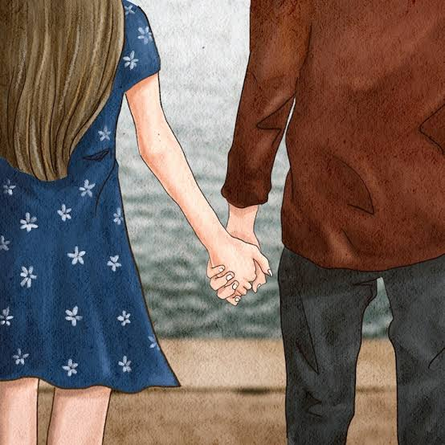

Every beautiful story has a beginning. This is how theirs began.
Aryan and Manshii's story began in the most unexpected way—through an online group chat where they were complete strangers.
One day, when almost nobody was active in the group, Manshii asked Aryan if they could continue the conversation in DMs. The first time, he ignored her message. But when she asked again, he finally agreed.
Their conversations didn't start with long paragraphs or endless late-night talks. In the beginning, Aryan mostly replied with simple "hm" or "haan," while Manshii patiently kept the conversation alive.
With time, those short replies slowly turned into real conversations. They started understanding each other better, laughing together, sharing little moments, and unknowingly becoming an important part of each other's lives.
The journey from a simple "Hi" to "Love You" didn't happen overnight. It grew one conversation at a time.
If this story exists today, a big part of the credit goes to Manshii. She never gave up on those conversations and, without even realizing it, helped Aryan open up in ways he never had before.
Sometimes, the most beautiful stories don't begin with a perfect plan.
They begin with a second chance, a simple "yes," and someone who chooses to stay. ❤️